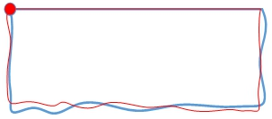
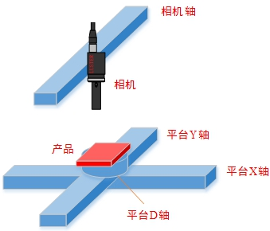
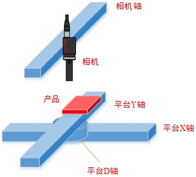
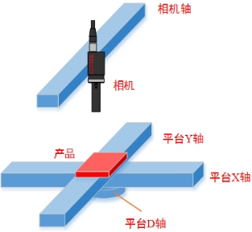

对位的其中一个重要的应用场景是点线对位点线，即根据线的角度进行旋转，根据点的位置进行平移。在实际应用项目中，点线对位点线的具体场景是，1个点和1条线，如图1所示。左上角点和上边是稳定特征，左边、下边和右边不是稳定的轮廓曲线，对位要求对象和目标的上边角度相同，并且左上角点位置相同。
多点线对位计算工具就是用于在已知对象的点和线，目标的点和线的情况下，计算多点线间的对位偏移量。

| 分类 | 参数名称 | 参数描述 |
|---|---|---|
| 属性窗口 | 坐标系类型 |
选择是XYD平台坐标系/XDY平台坐标系/DXY平台坐标系下对位。 |
| 校正范围是否会大于90度 | 对位时校正范围是否大于90度。通常对位应用都是小范围校正，为提升易用性，计算时忽略了输入直线的方向性，工具输出角度范围为[-90, 90)；但在一些拾取应用中，产品可能会任意角度摆放，校正范围需要在[-180,180)，此时需要将该参数设置为“是”。 | |
| 图像窗口 | 无 | 无 |
| 数据链 | 对象点坐标向量 | 对象点平台坐标组成的向量。 |
| 对象直线向量 | 对象直线组成的向量。 | |
| 目标点坐标向量 | 目标点平台坐标组成的向量。 | |
| 目标直线向量 | 目标直线组成的向量。 | |
| 平台轴方向 | 平台各轴的正方向。 | |
| X补偿量 | 输出的对位计算结果在X方向需要增加的补偿量 | |
| Y补偿量 | 输出的对位计算结果在Y方向需要增加的补偿量 | |
| D补偿量 | 输出的对位计算结果在D方向需要增加的补偿量 | |
| 高级界面 | 无 | 无 |
| 分类 | 参数名称 | 参数描述 |
|---|---|---|
| 监视窗口 | 相对对位偏移量 | 对位计算的相对对位偏移量结果。 |
| 执行结果 | 工具执行结果。 | |
| 执行时间 | 工具执行时间。 | |
| 图像窗口 | 无 | 无 |
| 数据链 | 相对对位偏移量 | 对位计算的相对对位偏移量结果，供后序工具使用，同监视窗口。 |
XYD平台：项目中最常见的平台类型，其XY轴呈垂直关系，旋转D轴直接对产品进行旋转，而对XY轴的角度关系无影响，如图2(a)所示。
XDY平台：该平台类型的旋转D轴安装于X轴与Y轴之间，直接决定XY轴之间的夹角。如图2(b)所示。
DXY平台：该平台的XY轴会随D轴旋转而旋转，但XY轴始终保持垂直关系，如图2©所示。

用法参见“\Samples\标准标定+基准四点两线对位.gvp”的多点线对位计算工具